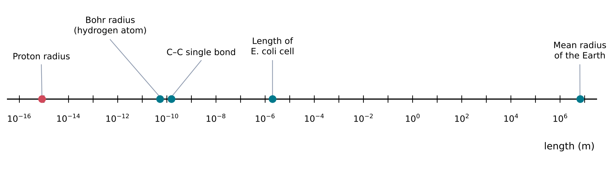
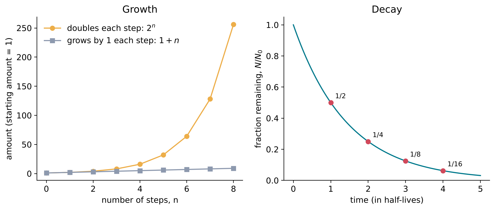
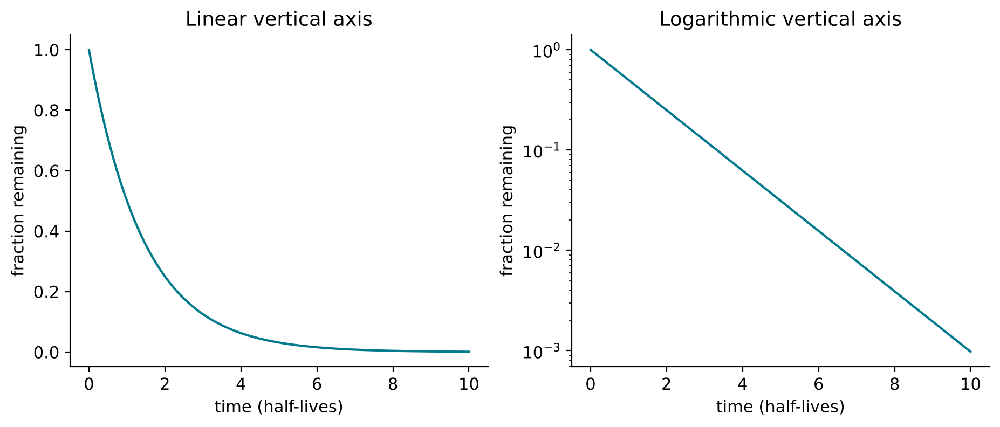
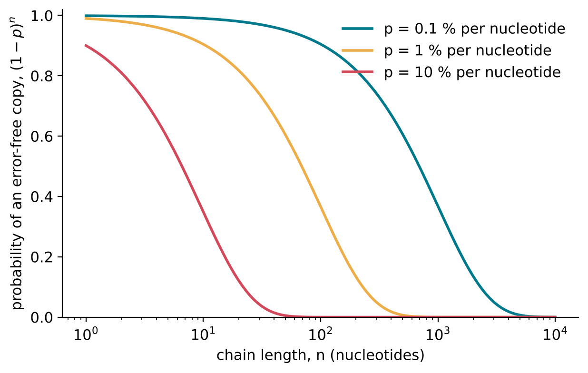

1 Numbers for Chemistry
The question of this chapter
Chemistry describes objects that are far too small to see, present in numbers far too large to count. A single drop of water, about 0.05 millilitres, contains about 1.7 × 1021 water molecules (a calculation shown in Chapter 6), and each molecule is less than a millionth of a millimetre across. The origin of life adds a third extreme: time spans of hundreds of millions of years, set against reactions that are over in a fraction of a second. This chapter asks: how can such numbers be written, compared and calculated with? It introduces the tools used for that purpose throughout chemistry: powers of ten, units, exponential change, logarithms and probabilities.
1.1 Very large and very small numbers
Powers of ten
A power is a number multiplied by itself a given number of times. The number being multiplied is the base, and the number of times it appears is the exponent, written as a raised number. Thus 103 (“ten to the power three”) means 10 × 10 × 10 = 1000, and 25 = 2 × 2 × 2 × 2 × 2 = 32.
Powers of ten are especially convenient, because the exponent counts the zeros: 101 = 10, 102 = 100, 106 = 1 000 000. By definition, 100 = 1.
A negative exponent means division instead of multiplication. 10−1 is 1/10 = 0.1, 10−2 is 1/100 = 0.01, and 10−6 is one millionth, 0.000 001. For a negative power of ten, the exponent counts the places by which the decimal point moves to the left of 1: 10−3 = 0.001, with the 1 in the third decimal place.
Scientific notation
In scientific notation, a number is written as a number between 1 and 10 multiplied by a power of ten. For example:
- 5 970 000 000 000 000 000 000 000 kg, the mass of the Earth, is written 5.97 × 1024 kg (NASA Space Science Data Coordinated Archive 2024);
- 0.000 000 000 052 9 m, a characteristic radius of the hydrogen atom known as the Bohr radius, is written 5.29 × 10−11 m (National Institute of Standards and Technology, n.d.).
To convert a number into scientific notation, move the decimal point until a single non-zero digit stands in front of it, and count the moves. Moves to the left give a positive exponent; moves to the right give a negative one. In 52 900 the point moves four places to the left, giving 5.29 × 104; in 0.0072 it moves three places to the right, giving 7.2 × 10−3.
Scientific notation does two things at once. It makes very large and very small numbers short enough to read, and it separates the two pieces of information that a number carries: the leading part says how much within a factor of ten, and the exponent says how large overall.
Calculating with powers
Three rules cover almost every calculation with powers of the same base:
\[ 10^a \times 10^b = 10^{a+b}, \qquad \frac{10^a}{10^b} = 10^{a-b}, \qquad \left(10^a\right)^b = 10^{a \times b} \]
Each rule follows from counting factors of ten. For example, 103 × 102 = (10 × 10 × 10) × (10 × 10), which contains five factors of ten, so it equals 105. Numbers in scientific notation are multiplied by multiplying the leading parts and adding the exponents:
\[ (3 \times 10^{8}) \times (2 \times 10^{-3}) = 6 \times 10^{5} \]
and divided by dividing the leading parts and subtracting the exponents:
\[ \frac{6 \times 10^{23}}{2 \times 10^{3}} = 3 \times 10^{20} \]
Addition and subtraction do not follow these rules: 103 + 102 is 1100, not 105. To add numbers written in scientific notation, first rewrite them with the same exponent.
Orders of magnitude
The order of magnitude of a quantity is the power of ten nearest to it. Two quantities that differ by a factor of about ten differ by one order of magnitude; quantities that differ by a factor of about a million differ by six. Orders of magnitude are the natural way to compare quantities that span many powers of ten, such as the abundances of the chemical elements in the Sun, or the rates of fast and slow chemical reactions.
Figure 1.1 places some lengths from atomic physics, chemistry and biology on a scale in which each step is one order of magnitude. The span from an atomic nucleus to the Earth covers about 22 orders of magnitude.

1.2 Quantities and units
A quantity is a number times a unit
A physical quantity, such as a length, a mass or a time, is expressed as a number multiplied by a unit. In “2.5 m”, 2.5 is the number and the metre is the unit. The number alone is meaningless: 2.5 m and 2.5 km are different lengths. In calculations, units are treated like algebraic factors. They are multiplied, divided and cancelled together with the numbers, which provides a check on every result: if the units of an answer are wrong, the calculation is wrong.
The International System of Units
Science uses the International System of Units (SI). It is built on seven base units, of which five appear in this book: the metre (m) for length, the kilogram (kg) for mass, the second (s) for time, the kelvin (K) for temperature, and the mole (mol) for amount of substance. Since 20 May 2019 every base unit has been defined by fixing the numerical value of a constant of nature (Bureau International des Poids et Mesures 2019); the mole, for example, is defined through the Avogadro constant, introduced in Chapter 6.
Other units are built from the base units and are called derived units. The joule (J), the unit of energy, equals 1 kg m2 s−2; the pascal (Pa), the unit of pressure, equals 1 kg m−1 s−2. A negative exponent on a unit means “per”: m s−1 is read “metres per second”, and kJ mol−1 is “kilojoules per mole”.
Prefixes
A prefix placed before a unit multiplies it by a power of ten (Table 1.1). A kilometre is 103 m, a nanometre is 10−9 m, and a micromole is 10−6 mol.
| Prefix | Symbol | Factor | Prefix | Symbol | Factor |
|---|---|---|---|---|---|
| kilo | k | 103 | milli | m | 10−3 |
| mega | M | 106 | micro | \(\mu\) | 10−6 |
| giga | G | 109 | nano | n | 10−9 |
| tera | T | 1012 | pico | p | 10−12 |
Prefixes also apply to non-SI units. In geology, time is measured in years, written “a” (from the Latin annus), so that 4.5 billion years is written 4.5 Ga (giga-annum) and a million years as 1 Ma.
Converting units
To convert a quantity from one unit to another, multiply it by a fraction that equals 1, written so that the unwanted unit cancels. Since 1 km = 1000 m, the fraction (1000 m)/(1 km) equals 1, and
\[ 3.2\ \text{km} \times \frac{1000\ \text{m}}{1\ \text{km}} = 3200\ \text{m} \]
The same method converts compound units. To express 72 km per hour in metres per second:
\[ 72\ \frac{\text{km}}{\text{h}} \times \frac{1000\ \text{m}}{1\ \text{km}} \times \frac{1\ \text{h}}{3600\ \text{s}} = 20\ \frac{\text{m}}{\text{s}} \]
Temperature
Temperature has two scales in common scientific use. The Celsius scale (°C) was originally defined by the freezing and boiling points of water. The kelvin scale (K) measures absolute temperature: its zero, 0 K, is the lowest temperature possible, at which no further energy can be removed from a substance. A step of one kelvin is exactly the same size as a step of one degree Celsius, and the two scales are related by
\[ T/\text{K} = t/^{\circ}\text{C} + 273.15 \]
where T is the absolute temperature and t the Celsius temperature (Bureau International des Poids et Mesures 2019). Thus 25 °C, a common laboratory temperature, is 298.15 K, and 100 °C is 373.15 K. Equations that contain a temperature, such as those for reaction rates and equilibria, always require the absolute temperature in kelvin.
Significant figures
A measured value is never exact. The number of digits used to report it, its significant figures, indicates how precisely it is known. “The mean radius of the Earth is 6371 km” (four significant figures) states the value more precisely than “about 6400 km” (two). A result calculated from measured values should not be reported with more significant figures than the least precise value used. Some values are exact by definition, such as the 273.15 in the temperature conversion and the Avogadro constant; these limit nothing.
1.3 Exponential change
Growth by a constant factor
Many processes in chemistry and biology change by a constant factor in each interval of time, rather than by a constant amount. A population of bacteria that doubles every 20 minutes has 2 times its starting number after 20 minutes, 4 times after 40 minutes, 8 times after an hour, and 2n times after n doubling times. Change of this kind is called exponential, because the elapsed time appears in the exponent.
The difference between constant-amount and constant-factor change is enormous over long times. Adding 2 in each of ten steps gives 20. Multiplying by 2 in each of ten steps gives 210 = 1024; in thirty steps, 230, more than a billion.
Decay by a constant factor
When the factor is less than 1, the quantity decreases exponentially. The most precise example in nature is radioactive decay. A radioactive nucleus has a fixed probability of decaying in each interval of time, independent of its surroundings and of how long it has already existed. As a result, in a large number of such nuclei, the same fraction decays in every equal interval. The time in which half of the nuclei decay is called the half-life, written t1/2. After one half-life, 1/2 of the original nuclei remain; after two, 1/4; after three, 1/8; and after n half-lives,
\[ \frac{N}{N_0} = \left(\frac{1}{2}\right)^{n} = \left(\frac{1}{2}\right)^{t/t_{1/2}} \]
where N0 is the number of nuclei at the start, N the number remaining after time t, and n = t/t1/2 the number of half-lives that have passed. Carbon-14, for example, has a half-life of 5700 years (Chechev and Bé 2012): after 11 400 years a quarter of it remains. Figure 1.2 compares exponential growth and decay.

Exponential decay is not limited to nuclei. Whenever each molecule of a substance has the same probability of being destroyed in each second, independently of the others, the amount of substance decreases exponentially. The breakdown of sugars in water, the reaction of many molecules with water (hydrolysis, Chapter 7), and the loss of RNA strands in any natural setting all follow this pattern, at least approximately.
The number e
Exponential change can be written with any base. Doubling uses base 2 and halving uses base 1/2. In science, however, one base is used far more than any other: the number e, equal to 2.718 28… (its digits continue without repeating). It arises naturally whenever a quantity changes at a rate proportional to its own size. If a quantity grows continuously at a rate of k per unit time, measured as a fraction of its current value, then after time t it has grown by the factor
\[ e^{kt} \]
and if it decays continuously at a fractional rate k, the fraction remaining is e−kt. Here k is called a rate constant; it has units of inverse time, for example s−1, so that the product kt has no units. The expression ex is often written exp(x), which is easier to read when x is a long expression; both forms are common.
The connection with half-lives is direct. Exponential decay written as e−kt and as (1/2)t/t½ describes the same curve, provided that
\[ t_{1/2} = \frac{\ln 2}{k} \approx \frac{0.693}{k} \]
The symbol ln, the natural logarithm, is explained in the next section. For now it is enough to note that a large rate constant means a short half-life, and that the two are inversely proportional: doubling k halves t1/2.
Everyday example: compound interest
Compound interest follows the same mathematics. A deposit that earns 5 % interest per year, added to the balance once a year, is multiplied by 1.05 each year. After 14 years it has grown by the factor 1.0514 = 1.98, so it has almost doubled; after 28 years by 1.0528 = 3.92, almost quadrupled. The doubling time is constant, as for any exponential growth, and is 14.2 years. The formula above, with k = 0.05 per year, gives 0.693/0.05 = 13.9 years; the small difference arises because the formula assumes that interest is added continuously rather than once a year.
1.4 Logarithms
The logarithm answers “which power?”
The logarithm to base 10 of a number x, written log10 x, is the power to which 10 must be raised to give x. Thus log10 1000 = 3, because 103 = 1000; log10 0.01 = −2, because 10−2 = 0.01; and log10 1 = 0. Logarithms of numbers that are not exact powers of ten lie between whole numbers: log10 2 = 0.301 (to three decimal places), because 100.301 = 2.00, and log10 50 = 1.699. The logarithm of zero or of a negative number is not defined, since no power of ten is zero or negative.
A logarithm is therefore the exponent of a number written as a power of ten. It discards the leading part and keeps the order of magnitude, refined to a decimal.
Rules for logarithms
The rules for powers translate directly into rules for logarithms:
\[ \log_{10}(a \times b) = \log_{10} a + \log_{10} b, \qquad \log_{10}\frac{a}{b} = \log_{10} a - \log_{10} b, \qquad \log_{10}\left(a^{n}\right) = n \log_{10} a \]
The first rule is the reason logarithms were invented: it turns multiplication into addition. It also explains a property of every logarithmic quantity: multiplying a quantity by 10 adds exactly 1 to its logarithm, and multiplying it by 2 adds 0.301.
Logarithmic scales
A logarithmic scale reports a quantity by its logarithm instead of by the quantity itself. Equal steps on such a scale correspond to equal factors, not equal amounts. Two logarithmic scales will be used in this book and are common in the chemistry of life.
- The pH scale (Chapter 8) reports the acidity of a solution. The pH is minus the logarithm to base 10 of the concentration of hydrogen ions, so a solution of pH 4 contains ten times the hydrogen-ion concentration of a solution of pH 5, and a thousand times that of a solution of pH 7.
- The log epsilon scale used by astronomers reports the abundance of an element in the Sun or a star. It is defined so that hydrogen has the value 12, and every step of 1 means a factor of ten fewer atoms.
Graphs can also be drawn with logarithmic axes. On a logarithmic axis, the marks 1, 10, 100 and 1000 are equally spaced. Such an axis can show, on one graph, values that differ by many orders of magnitude, and it turns exponential change into a straight line. Figure 1.3 shows the same exponential decay plotted on an ordinary (linear) axis and on a logarithmic axis.

The natural logarithm
Logarithms can be taken to any base. The logarithm to base e is called the natural logarithm and is written ln. Thus ln x is the power to which e must be raised to give x: ln e = 1, ln 1 = 0, and ln 2 = 0.693 (to three decimal places). The natural logarithm undoes the exponential function: ln(ex) = x and e^ln x^ = x. It obeys the same rules as log10.
Natural and base-10 logarithms differ only by a constant factor:
\[ \ln x = 2.303 \times \log_{10} x \]
where 2.303 is ln 10, rounded to three decimal places. This factor appears whenever a natural logarithm, which arises in physical equations, is converted into a pH or another base-10 scale.
The natural logarithm explains the formula for the half-life given in the previous section. After one half-life the fraction remaining is 1/2, so e−kt½ = 1/2. Taking natural logarithms of both sides gives −k t1/2 = ln(1/2) = −ln 2, and therefore t1/2 = ln 2 / k.
1.5 Probability
Probabilities as numbers between 0 and 1
A probability is a number between 0 and 1 that expresses how likely an event is: 0 means that it never happens, and 1 that it always happens. A probability can also be written as a percentage, so that a probability of 0.25 is 25 %. If an event has probability p, the probability that it does not happen is 1 − p.
Probabilities in chemistry usually describe the behaviour of many identical particles. When a nucleotide is added to a growing RNA chain with a probability of 0.99 of being the correct one, it means that, over many additions, 99 % are correct and 1 % are errors.
Independent events multiply
Two events are independent if the outcome of one does not affect the probability of the other. The probability that two independent events both happen is the product of their probabilities. If each of n independent events has probability p, the probability that all n happen is pn.
This rule has a striking consequence for long sequences of steps. Suppose that each nucleotide added to an RNA chain is correct with probability 0.99. The probability that a chain of 100 nucleotides is copied with no error at all is
\[ 0.99^{100} = 0.366 \]
so almost two-thirds of the copies contain at least one error. For a chain of 1000 nucleotides the probability falls to 0.991000 = 4.3 × 10−5, about 1 in 23 000. Figure 1.4 plots this probability for several error rates. The same calculation lies behind the idea of an error threshold in the study of the origin of life: there is a maximum length of a genetic molecule that can be copied faithfully enough to keep its information from one generation to the next.

Counting possibilities
When each of n positions can be filled independently with one of m possibilities, the number of different arrangements is mn. A sequence of RNA uses four different building blocks, so the number of different RNA sequences of length n is 4n. For n = 10 this is 1 048 576, about 106; for n = 40 it is about 1.2 × 1024. The set of all possible sequences of a given length is called sequence space, and its size explains why no experiment can test more than a tiny fraction of the possible RNA molecules of even moderate length.
Large counts of this kind are easiest to handle with logarithms. Since log10(4n) = n × log10 4 = 0.602 n, the number of sequences of length 40 has 0.602 × 40 = 24.1 as its logarithm, so it is about 1024.1, or 1.2 × 1024.
1.6 Reading graphs
Axes, variables and slope
A graph shows how one quantity depends on another. The quantity that is varied or controlled, such as time or temperature, is usually placed on the horizontal axis; the quantity that is measured is placed on the vertical axis. Each axis is labelled with the name of the quantity and its unit, often written in the form “Time (s)” or “Time / s”; the second form means that the numbers on the axis are the time divided by the unit, which are pure numbers.
The slope of a straight line is the change in the vertical quantity divided by the corresponding change in the horizontal quantity. Its unit is the vertical unit divided by the horizontal unit. On a graph of the amount of a product against time, the slope is the rate at which the product is formed. When the graph is curved, the slope at a point is the slope of the straight line that just touches the curve there.
Graphs with logarithmic axes
When one or both axes are logarithmic, as in Figure 1.3 and Figure 1.4, the meaning of position changes. Equal distances along a logarithmic axis are equal factors, so a point halfway between the marks 10 and 100 stands for about 32 (since 101.5 = 31.6), not 55. Before reading values from any scientific graph, check the labels of both axes and whether each is linear or logarithmic.
Two kinds of logarithmic graph are especially useful in chemistry. A graph of the logarithm of a quantity against time is a straight line when the quantity changes exponentially; its slope gives the rate constant. A graph of the logarithm of a rate constant against the reciprocal of the absolute temperature, 1/T, is a straight line for most chemical reactions; it is called an Arrhenius plot, and its slope gives the energy barrier of the reaction (Chapter 10).
Key points
- In scientific notation a number is written as a value between 1 and 10 times a power of ten, such as 5.29 × 10−11 m. Powers multiply by adding exponents and divide by subtracting them.
- A quantity is a number times a unit. SI base units used here are m, kg, s, K and mol; prefixes such as k (103), \(\mu\) (10−6) and n (10−9) multiply them by powers of ten. Units cancel like algebraic factors.
- Absolute temperature T in kelvin equals the Celsius temperature plus 273.15.
- Exponential change multiplies a quantity by a constant factor in each interval. Exponential decay has a constant half-life; after n half-lives a fraction (1/2)n remains.
- Continuous exponential decay is written e−kt, where e = 2.718 28… and k is the rate constant; the half-life is t1/2 = ln 2 / k \(\approx\) 0.693/k.
- The logarithm log10 x is the power of ten that gives x. Multiplying x by 10 adds 1 to its logarithm. The pH scale and the log epsilon scale of abundances are logarithmic.
- The natural logarithm ln x is the power of e that gives x; ln x = 2.303 log10 x.
- The probability that n independent events, each of probability p, all occur is pn. The number of RNA sequences of length n is 4n.
- On a logarithmic axis equal distances are equal factors; exponential change appears as a straight line.
Self-test
- Write in scientific notation: (a) 0.000 45 m; (b) 6 371 000 m. Then calculate (2 × 10−3) × (4 × 105) and (9 × 104) / (3 × 10−2).
- Convert 37 °C, the normal temperature of the human body, into kelvin, and convert 2.5 nm into metres.
- A radioactive isotope has a half-life of 8 days. What fraction of a sample remains after 32 days? What is its rate constant k in day−1?
- Solution A has a hydrogen-ion concentration of 10−3 mol per litre and solution B of 10−6 mol per litre. By what factor do the concentrations differ, and what are the two pH values?
- Each nucleotide in a copying reaction is correct with probability 0.999. What is the probability that a chain of 500 nucleotides is copied without any error?